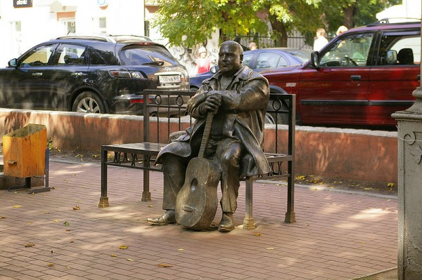
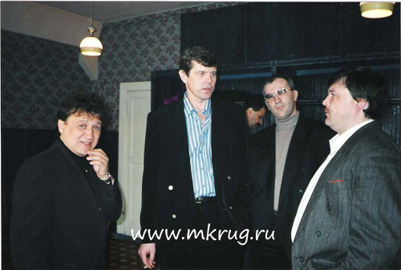
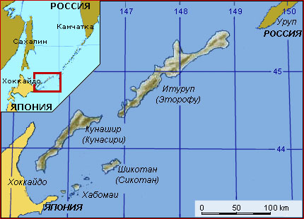

Кроме доступности информации в интернете есть еще одно неоспоримое на мой взгляд преимущество. Это преимущество называется гиперссылка. Возможность свободно гулять по дереву знаний расходящемуся от одной только темы лично для меня очень важна. Сегодняшний вечер примерно характеризует способ получения мною новых знаний.
Итак. С 23 часов до 1 часа ночи дела обстояли где-то так.
Сын начал собираться спать и попросил включить ему детское радио. Не вопрос — иду на 101.ru нахожу детское радио. Включаю, продолжаю бороздить.
Проходит 15 минут чтения лент, сын засыпает. 100 грамм выпитых виски намекает на то, что неплохо бы послушать что-нибудь «за жизнь». Список исполнителей «по душе» не очень широк, а так как у меня друг в пятницу возил по городу Ирину Круг, то переключаю на том же самом 101.ru радиостанцию на Михаила Круга. Начинает петь один из исполнителей, которых мне приятно слушать.
Пока играет «бада-бада-бада-бадам… мадам…» ищу подробности гибели певца.
Узнаю, что настоящая фамилия Михаила — Воробьев. Что по всей вероятности убили его члены банды «Тверские волки», которые, впрочем теперь осуждены пожизненно. Узнаю что Михаилу в родной Твери установлен небольшой памятник.

Девичья фамилия бывшей жены Михаила, вышедшей теперь еще раз замуж — Глазко. Заодно я исправляю опечатку в википедии.
Дальше я ищу сайт посвященный Михаилу Кругу. Там есть фотогалерея. Пролистываю несколько фоток. Натыкаюсь на эту.

К Александру Новикову я тоже отношусь очень хорошо, поэтому двигаемся дальше.
То что Александр Новиков живёт в Екатеринбурге известно всем (ну ладно не всем, но я знал), но из википедии я узнаю, что родился он совсем не на Урале а на остове Итуруп. Жизнь Александра, кажется мне известна достаточно, поэтому двигаемся на Курилы.
Остров Итуруп, как выясняется, не совсем чтобы обычный остров. Наряду с островами Шикотан, Кунашир и островами Хабомаи он является частью как раз тех спорных территорий из-за которых у нас с японцами не очень.
Острова не то чтобы большие, но позиция сторон принципиальна

Изучаем историю вопроса.
Суть конфликта, если коротко, в следующем. После Великой отечественной войны эти четыре острова (будем считать Хабомаи островом) стали как бы спорной территорией. В 56 году СССР согласился на передачу Шикотана и Хабомаи. Всё шло хорошо, пока в дело не вмешались США, которые в свою очередь отказались уступать Японии Окинаву и архипелаг Рюкю, если Япония откажется от претензий по Кунаширу и Итурупу. Япония тему начала сливать, на что советский союз вполне резонно отказался передавать Японии и первые два острова (тогда начиналась холодная война и мы вовсе не хотели приближать к себе американские ядерные военные базы). С тех пор и длится конфилкт.
Кроме психологического момента, по территориям, которые исторически в принципе являются японскими есть еще несколько моментов:
- рыболовство — благодаря акватории вокруг островов нам принадлежит практически всё Охотское море
- судоходство — между островов находятся единственные незамерзающие пути, позволяющие российским судам выходить а Тихий океан и в случае передачи островов Японии мы можем испытывать затруднения на этот счёт
- полезные ископаемые — на острове Итуруп находится единственное в России экономически выгодное месторождение рения — металла стоимость которого составляет от одной до десяти тысяч долларов.
Кстати Курилы называют именно так потому что на языке айнов (аборигенов этих островов) куру — человек пришедший из ниоткуда (это я тоже узнал сегодня).
Еще час ушёл на написание этого поста. А хотел всего лишь детское радио включить…